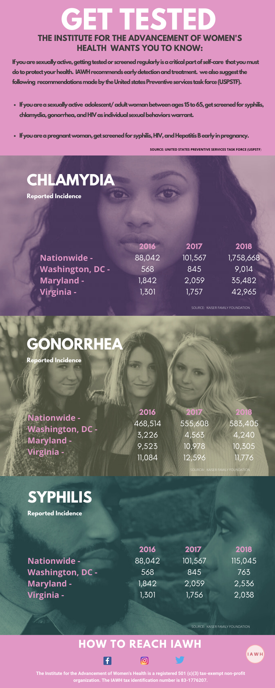

Just a few months ago, CNN did a story about sexually transmitted disease that I wish we all would read, digest, and then commit to bring about change. The article shed light on the impact of sexually transmitted infections (STIs) among women (below is a link to the CNN story). It’s now 2020 and according to the annual Sexually Transmitted Disease (STD) Surveillance Report released by the Centers for Disease Control and Prevention (CDC), combined cases of syphilis, gonorrhea, and chlamydia reached an all-time high in the United States in 2018 (since 1991); and women with chlamydia that goes untreated will likely develop pelvic inflammatory disease (PID; see CDC Fact Sheets).
So, let’s talk about why the rates are so high – because it didn’t “just” happen. According to the CDC, there are multiple reasons for the overall increase that include decreased condom use. Also, in recent years, more than half of local programs have experienced budget cuts, resulting in clinic closures, reduced screenings, staff loss, thus reduced patient follow-up and linkage to care services (see below, CDC, Rise of Sexually Transmitted Infections). See for yourself how devastating the impact of STDs are in this country. Find and compare your city’s STD rates with those provided below that represent national rates and for the metropolitan areas of “The DMV” (District of Columbia, Maryland, and Virginia).

More facts
In 2018:
- Diagnoses of chlamydia, gonorrhea, and syphilis all increased for the fifth year in a row.
- There were more than 2.4 million diagnosed cases of chlamydia, gonorrhea, and syphilis.
- There were over 200,000 more cases of these STDs than the previous record set in 2017.
From 2014-2018:
- Syphilis cases increased by 81%.
- Gonorrhea cases increased by 67%.
- Chlamydia remained at record highs.
- Congenital syphilis cases more than doubled.
Centers for Disease Control and Prevention
Here’s the thing ladies, our anatomy places us at a unique risk for STIs. When compared to a man’s anatomy, the vagina lining is thinner and more delicate than the skin on a penis, so it’s easier for bacteria and viruses to penetrate. Now, let’s just pause there. Our bodies are more susceptible to STIs than men, and on top of that, our vaginas also maintain a moist environment where bacteria can grow.
Did you know that we’re also less likely to have symptoms of an STI compared to men, and if symptoms do occur, they can go away unnoticed even though the infection may remain? These are ways STIs impact women differently from men and are reasons for us to get tested. It’s the same call to action related to HIV/AIDS – the only way to know is to GetTested because you can’t rely on “symptoms” to tell whether you have HIV – even though you know your body better than anyone.
So, what do we do now?
The Institute for the Advancement of Women’s Health, in partnership with women like you all across the nation, are offering a response to the increase of STIs, we’re saying to each other
Get Yourself Tested #GYT. Do you have an STI or not? Resolve to get answers. Sisters, we carry the weight of the world on our shoulders with life, family, school, caregiving, relationships, STIs, and __ (you fill in the blank)
Do!
First, start the delicate conversation with yourself, and then with your daughter, niece, cousin and friend by sharing this blog with them today. Just FWD this email and say something like, “Hey Rochelle, check out this info that you may find interesting, or feel free to share with someone else.” We are one, and when a woman is without the information that she needs to be her best, we lose a little bit of our own strength.
Feel free to use the following handles and hashtags via Instagram or Twitter to let us know you’ve locked arms with us for this cause. IAWH will engage with you along the way:
@AdvancingHerHealth | #GYT (Get Yourself Tested) | #STDMonth | #TalkTestTreat
…Sooo, What’s the Bottomline?
If you are sexually active, have an honest and open talk with your clinic or health care provider and ask whether you should be tested for STIs. Antibiotics can cure syphilis, gonorrhea, and chlamydia. However, left untreated, STIs can be transmitted to others and produce adverse health outcomes such as infertility, ectopic pregnancy, and increased HIV risk. Congenital syphilis – syphilis passed from a mother to her baby during pregnancy – can lead to miscarriage, stillbirth, newborn death, and severe lifelong physical and neurological problems. #GYT
The Institute for the Advancement of Women’s Health (IAWH.org) is a non-profit organization, based in Northern Virginia. It was created to conduct and apply community-based, public health research that leads to women becoming more knowledgeable and better-informed participants in their health care and well-being.From puberty through post-menopause and every stage across the life course of a woman, IAWH is invested in the education and training of women and others in women’s health. [[Subscribe]] to IAWH.org updates because we need you to help all of us make a difference in each other’s lives.
RESOURCES
Article: STDs are sexist, and women are the losers. Here's why (by Sandee LaMotte, CNN)
CDC Report: STDs Continue to rise in the U.S.
CDC Report: CDC 2018 STD Surveillance Report: State Ranking Tables (released in 2019)
CDC Fact Sheets:
- Chlamydia is a common STD that can infect both men and women. It can cause serious, permanent damage to a woman’s reproductive system. This can make it difficult or impossible for her to get pregnant later on. Chlamydia can also cause a potentially fatal ectopic pregnancy (pregnancy that occurs outside the womb).
- Pelvic Inflammatory Disease occurs in the upper part of the genital tract affecting the uterus, fallopian tubes and surrounding tissues in those areas. Untreated sexually transmitted diseases (STDs) can cause pelvic inflammatory disease (PID), a serious condition, in women. 1 in 8 women with a history of PID experience difficulties getting pregnant. You can prevent PID if you know how to protect yourself. This can cause infertility, with cases of acute PID being particularly damaging to fertility.
- Gonorrhea is a STD that can infect both men and women. Any sexually active person can get gonorrhea through unprotected anal, vaginal, or oral sex. It can cause infections in the genitals, rectum, and throat. It is a very common infection, especially among young people ages 15-24 yrs. You can get gonorrhea by having anal, vaginal, or oral sex with someone who has gonorrhea. A pregnant woman with gonorrhea can give the infection to her baby during childbirth.
-
Syphilis is a sexually transmitted infection that can cause serious health problems if it is not treated. You can get syphilis by direct contact with a syphilis sore during vaginal, anal, or oral sex. You can find sores on or around the penis, vagina, or anus. You can also find them in the rectum, on the lips, or in the mouth. Syphilis can spread from an infected mother to her unborn baby.
-
The Difference Between STDs and STIs: STD stands for sexually transmitted disease—but you probably knew that part already. “STD” is the most commonly used term for the collection of medical infections that are transmitted through sexual contact. But that’s just the thing. People who become infected, don’t always experience any symptoms or have their infection develop into a disease. That’s where the more modern term “STI” comes from.
· Additional CDC STD Facts Sheets (in English and Spanish)
· 10 Ways STDs Impact Women Differently from Men
· How Often Should I Get Tested?
This article first appeared on the IAWH Health blog on May 20, 2020 and is preserved here as part of the IAWH Health Journal archive. Information reflects what was known at the time of publication. This article is for general education and is not medical advice.
Topics: gyt, stdmonth, talktesttreat